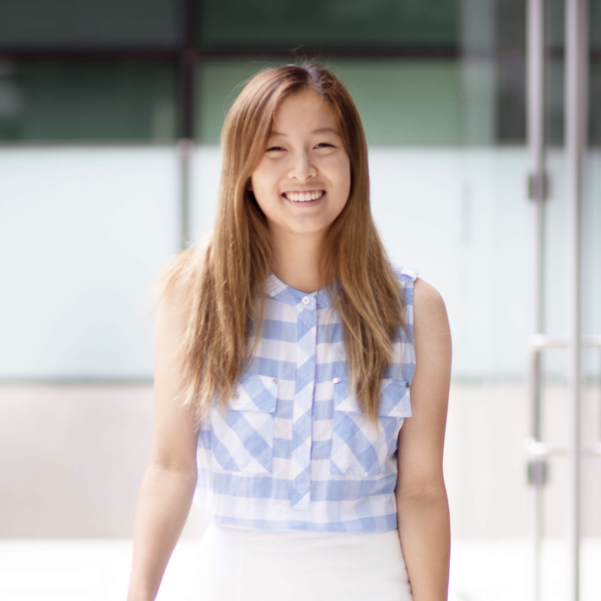

Let's Connect!
I was first admitted to UC San Diego to purse a bachelor's in nanoengineering. I was completely new to the discipline, but I knew engineering was a path I was excited about.
I joined a research lab at the intersection of materials science and bioengineering, working on flexible sensors. I spent ~10hr a week in a clean room and decided research wasn't for me.
I used student organizations and campus resources to explore alternatives, including the student-led Mars rover team, an engineering outreach org for local high school and middle school students, and women in tech. I also joined the largest computer science student organization on campus (CSES) and ultimately became co-president.
The computer science program at UC San Diego is one of the strongest in the country due to its faculty and resources. I still had a strong curiousity for natural sciences, but I also wanted to explore the computer science department. I applied and changed majors to Bioinformatics during my 2nd year to pursue the intersection of my interests.
During my 3rd year, I interned for LinkedIn. I'd spent the past 1.5 years exploring what career path I wanted to take. I landed on software engineering as it appealed to my motivation to solve complex problems and optimize.
I returned to LinkedIn following graduation, and I'm currently a senior software engineer with 4+ years of experience.

Let's Connect!